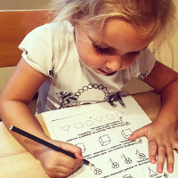

Ранній розвиток
Програми:
Програма раннього розвитку від 1,5 до 3-х років Курс «Хочу все знати» для дітей від 3 до 5 років Курс «Хочу до школи» для дітей від 5 до 7 років
Програма раннього розвитку від 1,5 до 3-х років - це спеціально розроблені тематичні заняття, які базуються на новітніх методиках раннього розвиткую Вони відповідають віковим здібностям та можливостям дітей раннього віку. Розвиваючі заняття створюють міцний емоційний зв’язок малюка з мамою, батьком, також вчать взаємодіяти з однолітками, адаптуватись в соціумі.
Групи поділені за віком:
- Група дітей віком 1,6 - 2 роки;
- Група дітей 2-2,6 років;
- Група дітей 2,6 - 3 роки.
Діти займаються в міні-групах з 6 чоловік, максимально наближених за віком. Присутність на заняттях близької людини (мами, тата, бабусі, дідуся, няні), затишна дружня обстановка створює дитині максимально комфортні умови на заняттях.
Одне заняття триває 40 хвилин.
На заняттях Ваші дітки будуть займатися:
- Розвитком мови (мовні і артикуляційні гри);
- Навчанням читання (перші кроки);
- Елементарною математикою;
- Розвитком логічного мислення;
- Розвитком сенсорики (розвиток органів чуттів);
- Розвитком уяви і творчих здібностей;
- Розвитком м'язів дрібної моторики руки; масаж, пальчикові ігри;
- Ознайомленням з навколишнім світом;
- Фізкультурою (рухливі ігри з використанням спортивного інвентарю).
Курс «Хочу все знати» для дітей від 3 до 5 років - це програма інтелектуального розвитку, розрахована на дітей від 3 до 6 років. Ця програма розділена на два етапи:
- з 3-х років до 4 років;
- з 4 до 5 років.
Мета заняття полягає в розвитку:
- мовної активності;
- грамоти;
- математичних і геометричних уявлень;
- образного і логічного мислення;
- поняття про навколишній світ.
Заняття триває для дітей 45 – 60 хвилин в залежності від віку дитини в групі до шести чоловік. Курс "Хочу все знати" розрахований на заняття без батьків, але, безумовно, в тісному контакті з ними. Після закінчення заняття, педагог дає свої рекомендації батькам для занять вдома.
Цей курс розрахований на відвідування занять 2 рази на тиждень. Розклад складений так, що заняття можуть відвідувати як діти, що ходять в дитячий садок, так і діти на домашньому вихованні.
Курс «Хочу до школи» для дітей від 5 до 7 років - це програма, яка розрахована на майбутніх першокласників. Програма курсу містить такі освітні блоки:
- 1. Грамота
- Це навчання дітей основам читання, вміння утворювати склади, читати слова, а згодом речення. На цьому курсі особлива увага приділяється активному розвитку мовлення: навчання складати речення, розповіді; вміння граматично і правильно висловлювати свою думку, будувати складні речення. Важливою складовою грамоти є навчання письму. Спеціально розроблені вправи спрямовані на те, щоб поступово навчити дитину писати літери у зошиті, а також правильно тримати ручку, утримувати правильну поставу під час письма.
- 2. Формування елементарних математичних уявлень
- Основним завданням є навчання дітей лічбі, додаванню, відніманню, вивчення знаків більше, менше, дорівнює. Навчити розв’язувати елементарні задачі та приклади. Ознайомити з величинами, вміти їх порівнювати. Вивчення геометричних фігур.
- 3. Ознайомлення з навколишнім світом
- Мета цього освітнього блоку – це передання дітям енциклопедичних знань про природу, людину та її діяльність, предмети та їх застосування, правила поведінки в суспільстві та ін.
Курс підготовки до школи, в першу чергу орієнтований на те, щоб підготувати дитину до школи не тільки інтелектуально, але й психологічно, дати їй основні поведінкові навички в новому середовищі, полегшити процес адаптації в колективі. Заняття відбуваються двічі на тиждень в групах до 5 дітей тривалістю 60 хвилин.